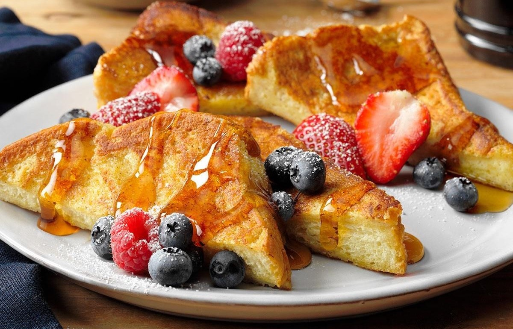

טוסט מצרפת
מצרכים:
-
5 פרוסות חלה חצויות
-
2 ביצים
-
חצי כוס חלב
-
קמצוץ סוכר
-
רבע כפית קינמון (מומלץ)
-
ממרח שאוהבים מעל
אופן הכנה
- מערבבים בקערה ביצים, חלב, תמצית וניל ואבקת קינמון
- מחממים מחבת עם כף חמאה או שמן (אש בינונית)
- טובלים כל חצי פרוסת חלה בבלילה משני הצדדים ומטגנים במחבת 2-3 דקות מכל צד, עד להזהבה
- מורחים מעל ממרח שאוהבים ומגישים
